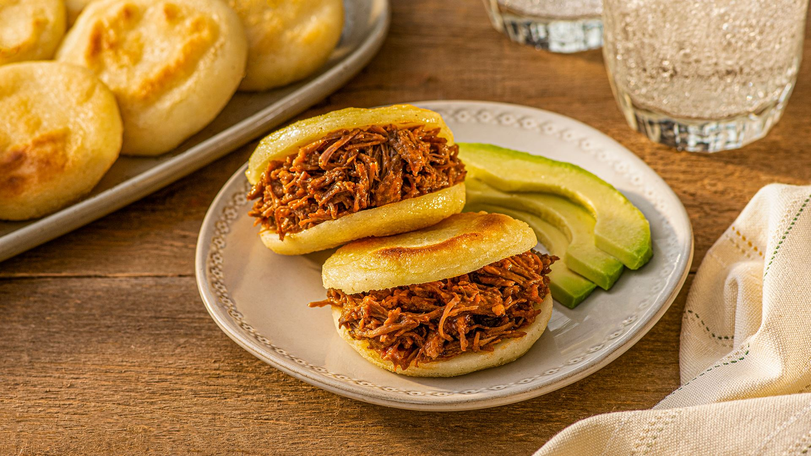
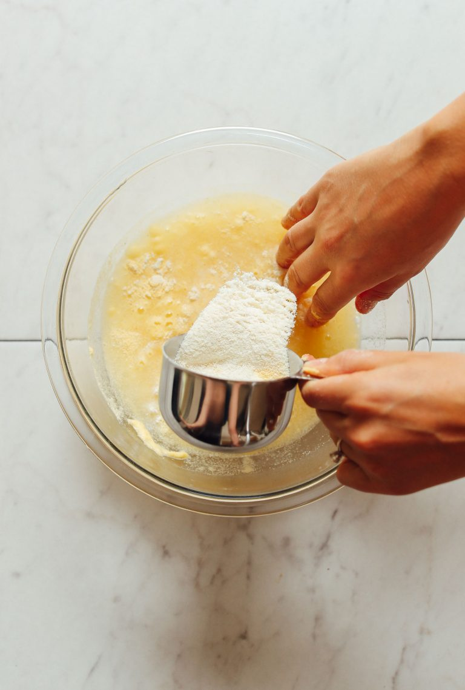
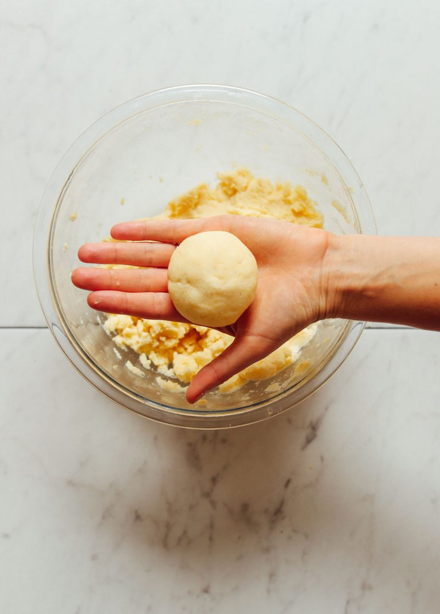
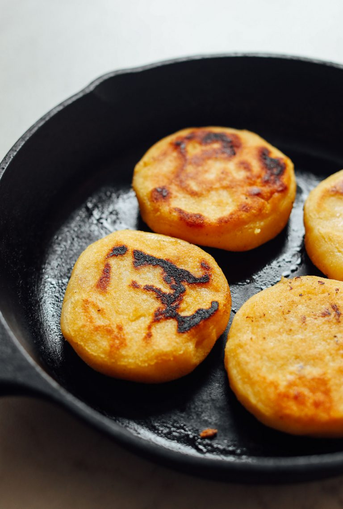
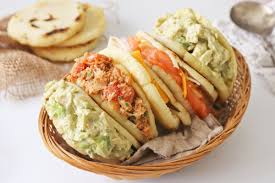

Arepas
What is an arepa?
Arepas are cornmeal cakes that originated
hundreds of years ago in a region that now
makes up Colombia, Venezuela, and Panama.
Traditionally, they were cooked on a pan called
a budare. But they can also be grilled, baked, or fried.
On this page you'll learn how to cook a venezuelan arepa.

Ingredients
This recipe only needs thirty minutes, one bowl and three ingredients
- Salt
- Oil for cooking
- Areparina or masarepa (which is a special pre-cooked corn flour specifically for making arepas)
Preparation
- Dissolve salt into the water and slowly add the masarepa until a loose dough forms, stirring with a spoon or
your hands.

- Once you get your dough where it should be, let it rest for 5 minutes.
- After those 5 minutes, scoop out fist-size portions and form into a ball. If the edges crack easily
or it feels too dry, add a little more water to moisten. It’s a simple dough to work with. Then it’s as easy
as rolling into balls and gently forming / smashing into discs.

- Once your arepas are formed, simply pan-fry in a little oil to form
a crust (a little deep blackening is OK!), and then finish in the oven to ensure
the centers are cooked through (optional but recommended). Then enjoy!

Note: You can fill the arepas with every stuff of your taste, it could be chicken,
meat, eggs, cheese, etc.

Home